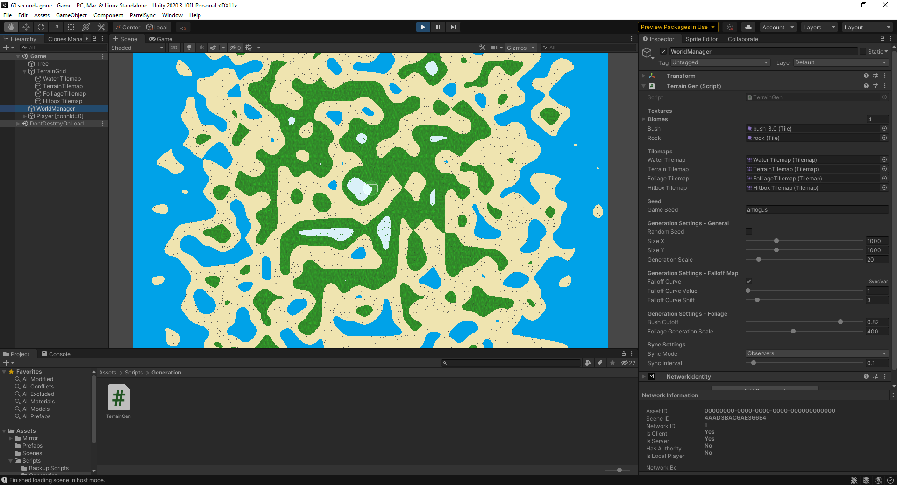

A personal project made in Unity to learn C# and how to use perlin noise to generate terrain.
This project generated 2D terrain using perlin noise along with a patterned applied on top of the perlin noise.
This allows the generation be an island instead of a section of terrain with a cut off.
The generation also use parameters that allowed the user to change properties such as the size of the island,
the value that determines how the ocean generates around the island, and the seed. With a seed the user can guarantee that
if the seed and other settings are the same the island with generate the exact same way each time.